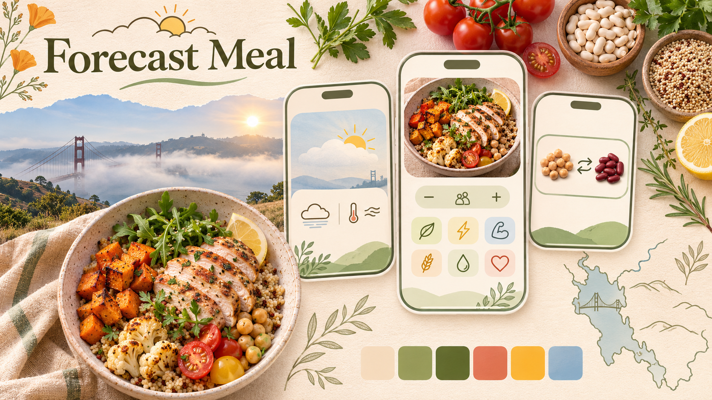

Find your forecast
Choose a California city or optionally share your location, then explore today’s forecast.
MM-621 · Project 03 · Fall 2026
Forecast Meal turns today’s local forecast into a starting point for your next home-cooked meal.

The idea
Choosing what to cook can feel like one decision too many. Forecast Meal connects the weather outside with your preferences to suggest one meal for today.
The prototype brings together a local forecast, cuisine and eating-style choices, ingredient exclusions, adjustable servings, and a recipe with estimated nutrition. It builds on the weather exploration in Project 2 and focuses on a simple, guided cooking experience.
Read the project story →Getting started
Follow the steps in the prototype at your own pace.
Choose a California city or optionally share your location, then explore today’s forecast.
Choose an eating style, cuisine, servings, and any ingredients you want to exclude.
Request a recipe, review the ingredients and steps, and select ingredients to substitute if you wish.
Recipes and nutrition values are AI-generated estimates. Dietary preferences and exclusions are not allergy controls; check ingredients and labels yourself.
Ready when you are